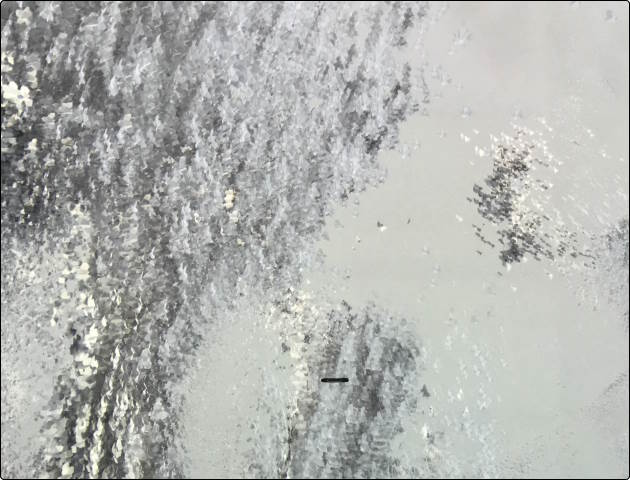
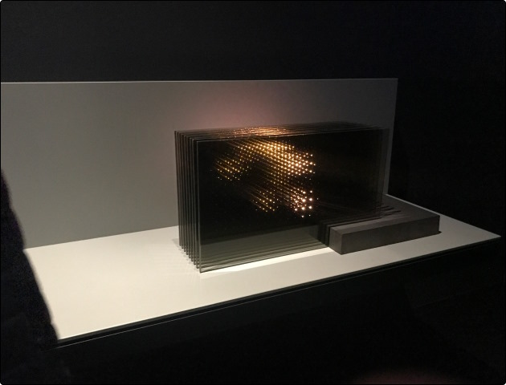
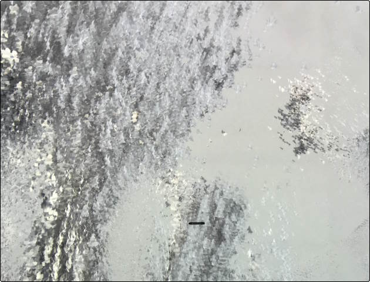
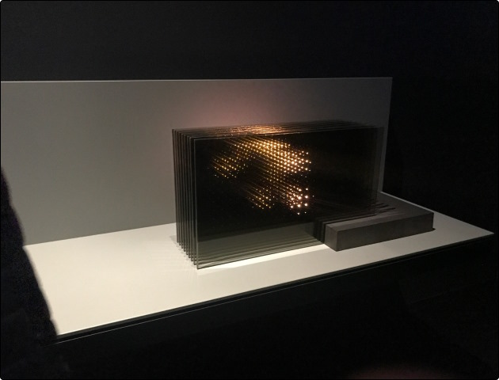

NXT MUSEUM
Het eerste museum in Nederland dat zich volledig richt op mediakunst. Ontdek grootschalige, digitale kunstinstallaties die je blik verruimen en de zintuigen op scherp stellen. De kunst van morgen, vandaag.
KOOP TICKETS 


